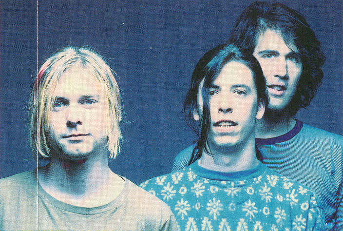
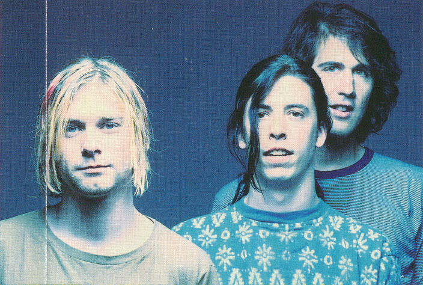

The Logo!
The yellow color in the Nirvana logo represents joy and energy, while the black color stands for supremacy and power.
{kind=link}
Try the Onyx font with your own words;
Theories
There are a few different theories on the origins and meaning of the iconic Nirvana “Smiley Face” logo with it’s crossed-out eyes and it’s drooling mouth.
Party Poster;
Most people agree it was drawn by Kurt Cobain and made it first appearance on this flyer for the release party for Nirvana’s “Nevermind” album on September 13, 1991.
Around the same time, it was also used on the front of Nirvana’s Flower Sniffin, Kitty Pettin, Baby Kissin “Corporate Rock Whores” Tee Shirt.
{kind=link}
Lusty Lady;
The “Smiley Face” was inspired by the Marquee at the now defunct Lusty Lady Strip Club located on 1315 First Avenue in downtown Seattle, Washington.
{kind=link}
Acid House;
Another theory out there cites the “The Acid House” logo as the inspiration for the Nirvana logo. Rumors are out there that Kurt apparently would visit this place.
{kind=link}
Face Expression;
Other say the logo is either a drunk person, a person on drugs, a drawing under the bridge he slept under or Kurt’s interpretation of the face people in the crowd would make when watching Nirvana perform.
{kind=link}
Little Note : Only Kurt himself would have known the actual meaning as none of these theories have ever been confirmed. Quite possibly, the logo meant nothing at all.


 
